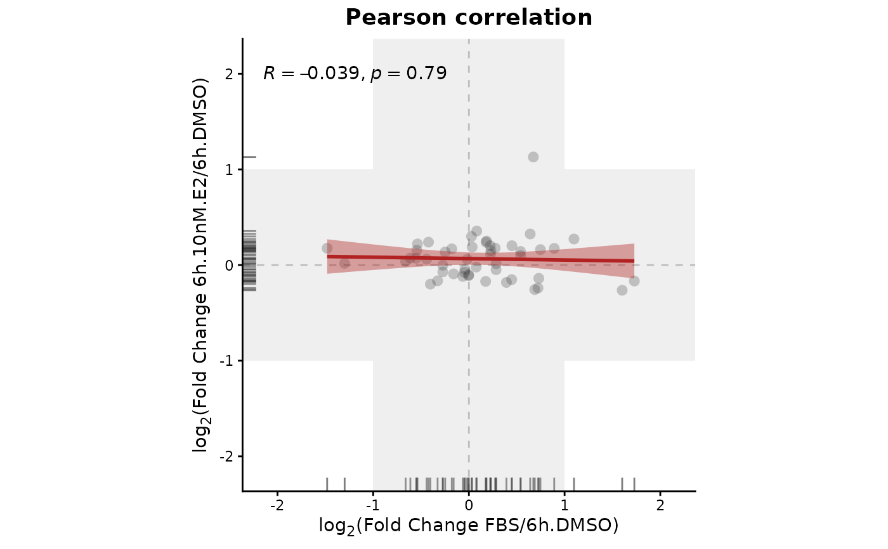

Plots a scatter plot of the log2(fold change expression) derived from two differential analyses contrasts.
contrast.scatter(
DEprot.analyses.object,
contrast.x,
contrast.y,
regression.line.color = "firebrick",
correlation.method = "pearson",
add.foldchange.threshold = TRUE,
symmetric.axes = TRUE
)An object of class DEprot.analyses.
Integer indicating the position of the contrast to use for the x-axis of the plot.
Integer indicating the position of the contrast to use for the y-axis of the plot.
String indicating any R-supported color to use for the regression line and error. Default: "firebrick".
String indicating the clustering method to use to generate the correlation matrix. Possible options: 'pearson', 'spearman', 'kendall'. Default: "pearson".
Logical value to indicate whether two gray rectangles should be used to highlight the non-differential area in the plot, based on the foldchange threshold indicated during the differential analyses. Default: TRUE.
Logical value indicating whether the axes should be forces to be symmetric between x and y. Default: TRUE.
A scatter plot of class ggplot2.
contrast.scatter(DEprot.analyses.object = DEprot::test.toolbox$diff.exp.limma,
contrast.x = 1,
contrast.y = 2)
